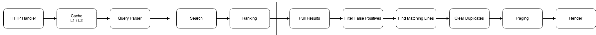
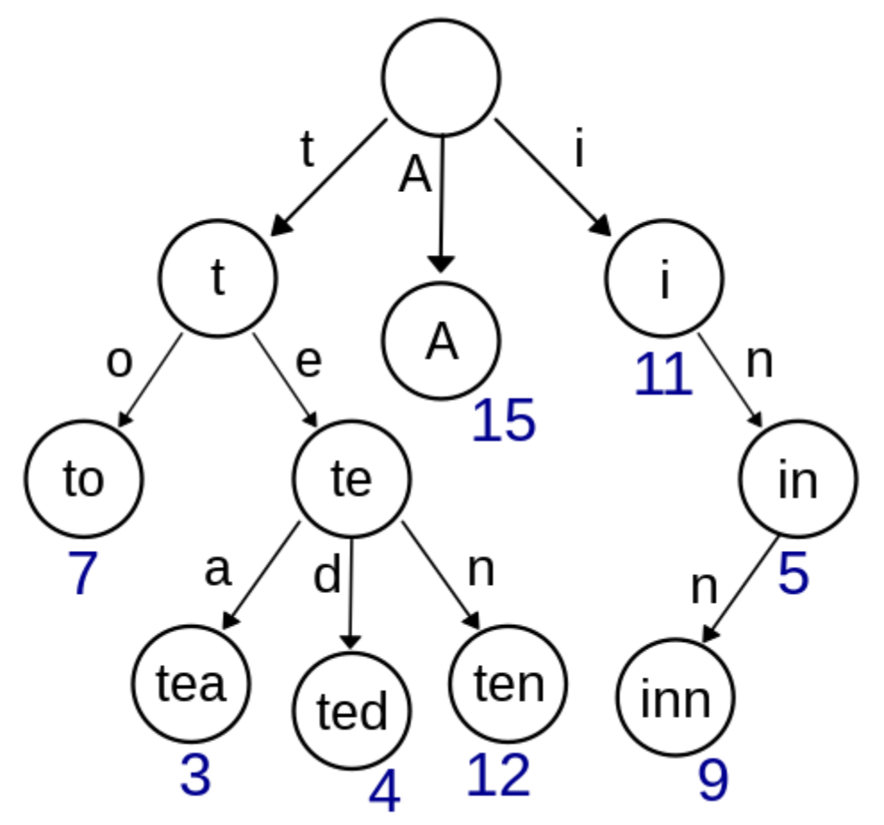
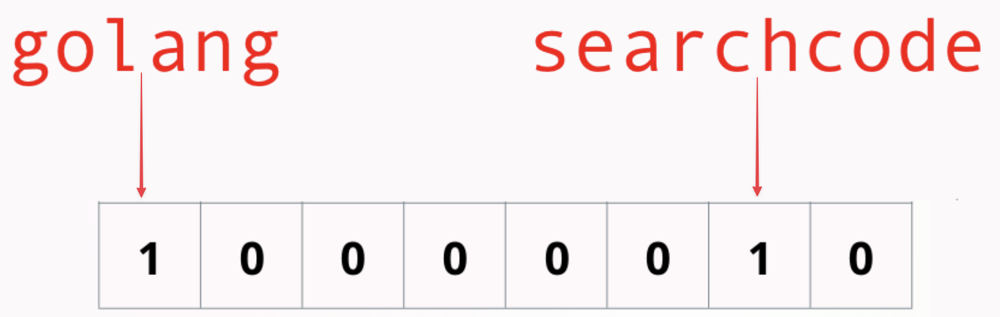

Building a code search index in Go
Who are you?
"Officially" technical lead/principle at Kablamo but a "code monkey" at heart.
I blog boyter.org I free software github/boyter/ I run searchcode.com also on the twitter @boyter activitypub @boyter@honk.boyter.org
searchcode.com
IMAGE_HERE
Requirements
- Special characters
(i++) - Inline searches find
i++infor(i:=0;i<100;i++) - Site is free...
- Embed into application must use Go
- Entirely in RAM
- Needs a cool name. Caisson!
- Needs to be fun to work on!!!
Search Lifecycle
Why Go?
- Reasonable performance
- Low memory usage
- Integer types int8, uint8, uint16, int32 etc...
Searching code
Trigrams
searchcode -> sea
ear
arc
rch
chc
hco
cod
ode
How to build an index
Inverted index. Most common way to do it.
map[string][]struct{}
map[string][]int64{}
- Posting lists
- Need to implement skip lists or compression on the posting lists at scale
- Supports a positional index
Trie
Typesense uses this, its also written in C++
- Big problem is not friendly to GC due to the use of pointers (problem for Go)
- Need to implement skip lists or compression on the posting lists at scale
- Supports a positional index
Bloom filter
Search


Optimise
┌──────────────────┐ ┌───────────────────────────────────────────────────────────────────┐
│ bucket │───▶│ │
└──────────────────┘ │ 0011100000000000000000000000000011010010000000000000010000111111 │
│ 0000100000000110001000000000000000000000001010001000001000000000 │
│ 0010000000000000000000000000000001010001111111110000010100111111 │
│ 0000100011010000000000000000000000000000001010001000000110000000 │
│ 1100011000000001111111010100100010000000000000010000000000100100 │
│ 0000000000000000000000000000000000000001111111110000000000000000 │
│ 1000011000100001111111010100000010000000000000010000000000100100 │
│ 0000000000000000000000000000000000000001111111110000000000000000 │
│ 0000000000000010000000000011000000001000000000000000000000001000 │
│ 1111111000000000000000000000001000010000010000000000000000011000 │
│ 1111111111111111000000000011000000000000000000100010000000000000 │
│ 1111111000000000000000000000001000010000010000010000000000001000 │
│ 0000000000000000000000000000000000111110000000000000000000000000 │
│ 0000000001100000110000001000000000000000000001000000101001000000 │
│ 0000000000000000000100000000000000111110000000000000110000010000 │
│ 0000000000100001110000001000000001000000000000000000101001111111 │
│ │
└───────────────────────────────────────────────────────────────────┘
Deterministic Keys
┌──────────────────┐ ┌──────────────────┐ ┌──────────────────┐
│ caisson ├─┬▶│ shard 512 ├┬─▶│ bucket-1 │
└──────────────────┘ │ └──────────────────┘│ └──────────────────┘
│ │
│ │ ┌──────────────────┐
│ ├─▶│ bucket-2 │
│ │ └──────────────────┘
│ │
│ │ ┌──────────────────┐
│ └─▶│ bucket-3 │
│ └──────────────────┘
│
│
│ ┌──────────────────┐ ┌──────────────────┐
└▶│ shard 2048 ├┬─▶│ bucket-1 │
└──────────────────┘│ └──────────────────┘
│
│ ┌──────────────────┐
├─▶│ bucket-2 │
│ └──────────────────┘
│
│ ┌──────────────────┐
└─▶│ bucket-3 │
└──────────────────┘
Deterministic Keys
// Trigrams given input splits according to trigram rules
// where we want to be as efficient as possible
func (ci *CaissonIndex) Trigrams(text string) []string {
var runes = []rune(text)
if len(runes) <= 2 {
return []string{}
}
ngrams := make([]string, len(runes)-2)
for i := 0; i < len(runes); i++ {
if i+3 < len(runes)+1 {
ngram := runes[i : i+3]
ngrams[i] = string(ngram)
}
}
return ngrams
}
Thank You!
Presentation located at https://boyter.org/static/golang-syd-25th-may/ or just go to boyter.org and I will link it up tomorrow.